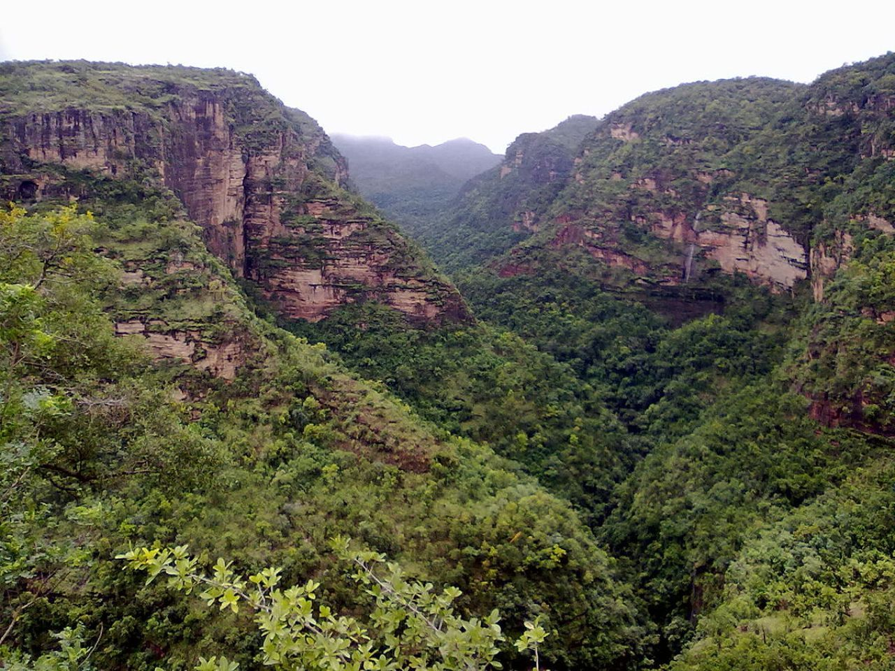
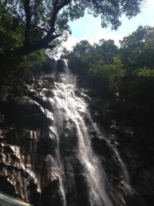

Pachmarhi
Pachmarhi is a hill station in Madhya Pradesh state of central India. It has been the location of a cantonment (Pachmarhi Cantonment) since British Raj. It is widely known as Satpura ki Rani ("Queen of Satpura"), situated at a height of 1100 m in a valley of the Satpura Range in Hoshangabad district. Dhupgarh, the highest point (1,350 m) in Madhya Pradesh and the Satpura range, is located here.
History
The name Pachmarhi is believed to be derived from the Hindi words Panch ("five") and Marhi ("caves"). According to a legend, these caves were built by five Pandava brothers of Mahabharatha era during their thirteen years of exile. The caves are situated on a hilltop and provide an excellent vantage point. At the time of the British arrival, the Pachmarhi region came under the kingdom of the Gond king Bhawut Singh, although it was not a populated village or town at that time. Captain James Forsyth of the British Army along with Subhedar Major Nathoo Ramji Powar who was later made the Kotwal (Incharge of the armoury (Koth)of Pachmarhi, spotted the plateau in the Pachmarhi region in 1857, while leading his troops on the way to Jhansi. It quickly developed into hill station and sanatorium for British troops in the Central Provinces of India.
Tourism
Pachmarhi has a lot of cave paintings in the forests, some of which have been estimated to be as much as 10,000 years old. Shown in the picture is the garden at the base of a tourist attraction called Pandava Caves. The caves are Buddhist in origin but the name persists. The place has rich timber reserves including teak, but being a part of a reserve no new construction or felling of trees is allowed. Having a rich and rare flora as well as fauna, Pachmarhi needs central and state government approval fo
Pachmarhi


 Bee Fall is a popular water-fall located at Pachmarhi Hill Station in Madhya Pradesh state on Central India. Pachmarhi is a tourist destination on Satpura Hills. Their are number of waterfalls in Pachmarhi but among them Bee Fall is considered as most popular one and must visit tourist point. Pachmarhi is a popular tourist destination among domestic tourists. Here we can find tourism activities through out the year. It is a natural water fall deep below valley, reached with the help of jeep to some distance then foot steps. There are many water falls in Pachmarhi, but no one is like Bee falls, as the waters of a perennial stream tumble down 35 meters, giving a spectacular view to all those nature lovers who come here, there are many water falls around Pachmarhi, but the beauty of falling a narrow stream of water from a great height, and when it looks like falling melting silver, this all make Bee Falls alike to other. Getting here in summers could be auspicious time for all those nature lovers who ever wanted to feel the chillness of being close to the Mother Nature.
 Built by the British in 1892, this ancient monument displays a striking blend of French and Irish architecture. The stained glass windows beautify the edifice and add to its magnificence. It also has an old cemetery attached to it. The tombstones here dates back to 1859, World War I and World War II.
The climate here is mild, and generally warm and temperate. When compared with winter, the summers have much more rainfall. This location is classified as Cwa by Köppen and Geiger. The temperature here averages 21.7 °C. The rainfall here averages 2012 mm. At an average temperature of 30.3 °C, May is the hottest month of the year. At 15.5 °C on average, December is the coldest month of the year. Jatashankar and Mahadev caves are mountain caves with fresh water dripping from them. One can witness ecosystem at work out here with mountains feeding the streams with fresh water, the water that they soak-in during autumn. As the name suggests, these caves and many others like these are abode of lord Siva.
Built by the British in 1892, this ancient monument displays a striking blend of French and Irish architecture. The stained glass windows beautify the edifice and add to its magnificence. It also has an old cemetery attached to it. The tombstones here dates back to 1859, World War I and World War II.
The climate here is mild, and generally warm and temperate. When compared with winter, the summers have much more rainfall. This location is classified as Cwa by Köppen and Geiger. The temperature here averages 21.7 °C. The rainfall here averages 2012 mm. At an average temperature of 30.3 °C, May is the hottest month of the year. At 15.5 °C on average, December is the coldest month of the year. Jatashankar and Mahadev caves are mountain caves with fresh water dripping from them. One can witness ecosystem at work out here with mountains feeding the streams with fresh water, the water that they soak-in during autumn. As the name suggests, these caves and many others like these are abode of lord Siva.